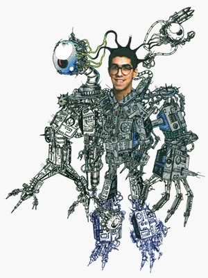

|
Email: Social links: 
Cyborg (so much free time in the 90s...)
|
HELLO,
Time will tell us if Artificial Intelligence is the greatest achievement of mankind or a delusional hype but, despite the outcome of evolution, AI will always have this charming quality of existing in-between reality and dream, science and fiction. It has something "alive" in it by definition: intelligence. Trying to create AI is trying to create something that exists only in living beings, produced by biological brains crafted by millions of years of evolution. In that sense, maybe AI is a form of art after all. More than that, it carries the promise of surpassing human intelligence, which it already does in narrow applications like games and vision. I remember programming a checkers algorithm, in the 90s (using Prolog - yes, it's a very old story), and feel pure joy each time I lost against it. Lee Sedol, world champion and greatest master of the complex game of "Go", was not very happy losing against a machine in 2016, but his goal was different from mine: he was playing to win. Despite the level of expertise and the kind of game, losing against something we've created is not losing at all (unless, of course, we're talking about Skynet). Also in the 90s, I've programmed my first ELIZA-inspired chatbot and almost force my friends to make conversations with it. Regardless of being a really basic (stupid) piece of code, with no AI at all, it generated fun, surreal, memorable dialogues - like ELIZA did in the 60s. And that's another pearl shinning under the AI shell: the tendency humans have to ignore the known limitations of programs and perceive attributes that machines don't have (yet), like reasoning, emotions, empathy or sarcasm. This is known by the ELIZA Effect and it's fun and scary at the same time. Today rule-based engines like Chatscript surely allow to take pattern matching bots to a higher level (check if Rose agrees), and there are of course the more trendy AI approaches, some being developed by software giants like Apple, Amazon, Microsoft and Google. It will be fun to see what chatbots will accomplish in the near future. And there it is. Some years after the end of the latest AI winter, I find myself entertained with neural networks, deep reinforcement learning and chatbots, this time professionally, delightedly seeing that the world is betting on AI and important breakthroughs are being achieved every year. Deep Learning successes of the last years woke up the hopes and fears about a powerful artificial intelligence. I've created this website to share some of my enthusiasm about all this. What do I do? I'm a software designer / developer and a Machine Learning learner. I've worked in the AI field researching and prototyping deep reinforcement learning algorithms for the contact center industry, and also in Microsoft Language Understanding (LUIS)-powered chatbots. I've also conducted research in the chatbots area, while maintaining a Windows desktop application for contact center agents, capable of handling different media like voice, email and instant messaging, able to run customized scripts, manage contacts, access a knowledge base and integrate with third-party software in several ways. The graphical interface was designed to be highly flexible so it can adapt to the needs of every customer (and that is a big challenge). I've designed and developed, among other features, a layout editor, a visual script editor, a highly-customizable leaderboard control for gamification purposes and a 'smart inbound' system to help the human agent to identify ASAP who's on the other side of the line.
I've started working on cloud computing in 2018. Using my machine learning knowledge, I've designed a fault tolerant, scalable cloud service to provide Knowledge Management features, namely a document classifier and a recommendation system for chat. This autonomous system analysed agent transcripts periodically and learned from them. It was then used by the agent applications to provide quick recommendations for the agents during live chat sessions, based on the context (the last n lines of conversation) and based on what the agent was typing at the moment. It supported 5 cultures automatically using built-in language detection. I’ve also worked in routing algorithms, developing the engine of a routing automated agent for a powerful, flexible and easy-to-use inbound routing solution, able to be graphically configured and monitored in real time, in the context of an Alcatel-Lucent Enterprise partnership. And I’ve worked in "low code" tool for automated agents (IVR and routing agents), capable of creating chatbots and voicebots using speech recognition and text-to-speech features, with an intuitive interface. Intent/entity management and recognition was executed with Microsoft LUIS as backend, in this case. I'm currently working in a multinational team building cloud APIs for Microsoft Teams integration. I like to make software, from the inception (research, brainstorm, architecture) to the end stages of development and testing. Patience is needed, and I have plenty to prototype, improve and test graphical interfaces or fine-tune neural networks. Designing a software product is always a challenge that requires patience, empathy and creative work. And hopefully a grain of Machine Learning. I have a Licentiate degree in Information Systems and Computer Engineering from Instituto Superior Técnico (University of Lisbon). |